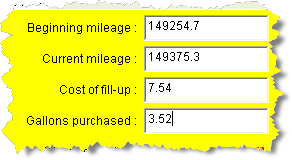
AJButton object is useful when you
want to carry out an action and a JLabel object
is useful when you want to impart some information to your user.
When you need to get some information, however, nothing
beats a JTextField, and its sibling, the
JTextArea.
The JTextField is our first GUI input component.
A JTextField object is a single-line
input area that allows your users to supply
data to your program as it runs, such as the mileage,
and number of gallons used in the gas-mileage calculator
shown here. The JTextArea allows you to enter
(or display) several lines of text at once.
That means you can start writing programs that are actually useful.
JTextField Objects
Let's start by looking at a simple GraphicsProgram named
AddTwoNumbers which you'll find in this chapter's code folder.
Here's what the program looks like when it runs:
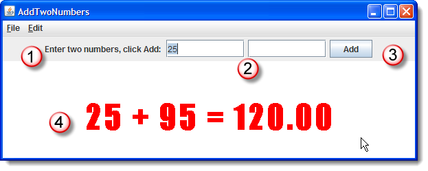
As you can see, the program has:- A
JLabeltelling the user to enter two numbers in the northern border. - Two
JTextFieldcomponents where the user can enter numbers. - A
JButtonwidget that the user can click to add the two numbers together. - A
GLabelto display the results of your calculation.
Open and run the program, and then we'll see how it works, and how you might improve it.
Constructing JTextField Widgets
Creating a JTextField widget is similar to creating
a button or label. Since you'll normally need to interact with
the widget later in your program, (to get the text that the
user types when the program runs), you'll almost always use
an instance variable for your text field.
In AddTwoNumbers, I've created two JTextField
instance variables, aTF and bTF, and
then used one of the constructors to set the number of columns
to 10, since I don't expect any numbers larger than that:
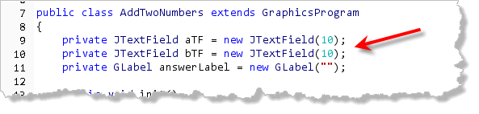
TheJTextField(int numChars) constructor, creates a
field big enough to hold numChars, average-width
characters. This is the constructor that you'll normally use.
There is also a constructor JTextField(String initialString, int numChars)
that is useful if you want to supply a default initial value to
appear inside the text field that the user can edit when
the program runs.
Initialization
There are several things you can do to your text field before you add it to your program.
- You can change the background or foreground color with
setBackground()orsetForeground(). - You can change the font used with
setFont(), although, like other Swing widgets, you must pass aFontobject, not aString. Remember too, that you can get aFontobject from aStringby calling theFont.decode(Family-style-size)method. - You can change the text alignment by using the
setHorizontalAlignment()method, passing the constantJTextField.RIGHTto right-align the text inside the text-field. Often, users will find this much more natural, when they have to input numeric data, since the input fields will line up just like the output fields.
Once you have the text field customized, you can add it to the
borders of your program, just like you would a JLabel
or JButton. Here's the code from AddTwoNumbers
that adds each of the Swing widgets:
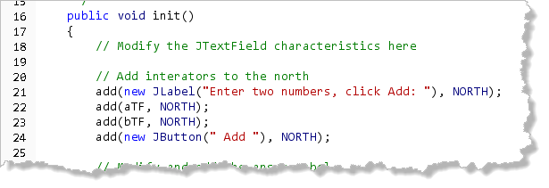
After this, the program finishes up itsinit() method
by adding the GLabel to the program's central
GCanvas and then activating the button by calling
addActionListeners: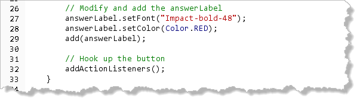
Data In & Data Out
The most oft-used method in the JTextField class is
the one that retrieves the information entered by the user.
Normally, a user types information into a JTextField,
and you use the getText() method to retrieve the
information, and to store it in a String, like
this:
String aStr = aTF.getText();
You can also use the setText() method to change
the text contained in a text field. If you wanted to "empty out"
the JTextField where the user entered a value,
you could use this code:
aTF.setText("");
The pair of double-quotes, without any space or characters inside, is called the empty string. Setting the text of a component to the empty string is how you say "remove all of characters in this component".
Numeric Input
It is important to note that all JTextField
input is textual input. If you want to let your users enter
numeric data, as in our program, then you have to:
- grab the input as a
Stringand store it in a variable. - then using the various parsing methods
such as
Integer.parseInt()orDouble.parseDouble()to convert theStringto the numeric value you need.
Here's the code that does that in our program when the
user presses the Add button:
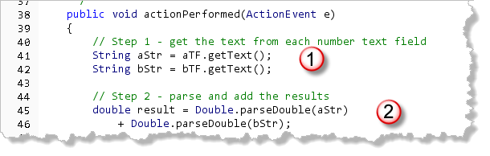
The only problem with doing this (other than the extra work, of course), is that if the user types something that isn't "parseable" (like the word "cat"), then your program "crashes" with a runtime error: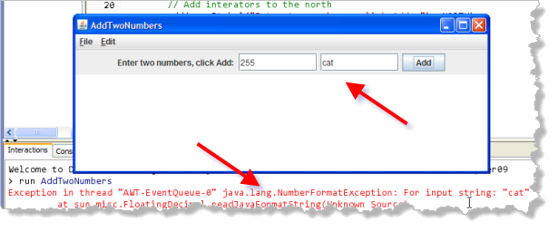
There are two possible solutions to this problem:- Check the input data before you convert it to make sure that it is valid.
- Use an error-checking widget like the ACM
IntFieldandDoubleFieldwidgets found in theacm.guipackage.
Let's look briefly at both of these.
Checking Valid Input
The easiest way to check for valid input is to first
parse the input, and then catch the exception if it
is invalid. Unlike some other languages, (Visual Basic for example),
Java doesn't have an isNumeric() method.
Since we don't yet know how to catch an exception, we
can use a regular expression with the matches()
method, like this, instead:
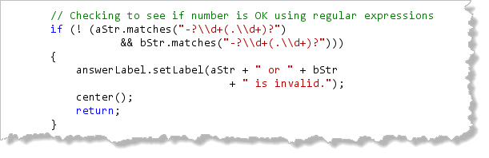
Thematches() method shown here returns true if
the String matches the regular expression
"-?\\d+(.\\d+)?".
Regular expressions implement a pattern matching meta-language
that is embedded in many different programming languages, including
Java. This particular regular expression means to examine the string for:
- an optional negative sign (
-?) - followed by any number of digit characters
(
\\d+) - followed by a single optional decimal point,
followed by any number of digits
(
(.\\d+)?)
The if statement used here checks to see
if both of the text field's contents match this expression. If
either does not, then the code prints an error message on the display
and leaves the event handler, like this:
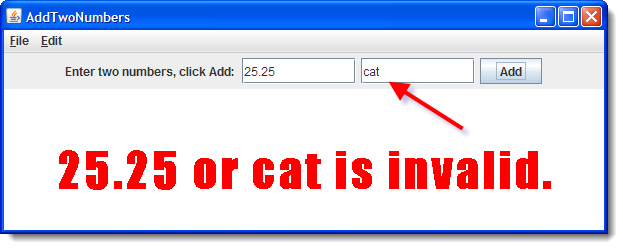
Error-Checking Widgets
The ACM error-checking widgets are specialized versions of
JTextField that have the normal setText()
and getText() methods. In addition, these classes also
have setValue() and getValue() methods that
automatically convert the input value for you.
Here's what the program looks like when we replace both
JTextField objects with DoubleField
objects and then use getValue() instead of
Double.parseDouble():
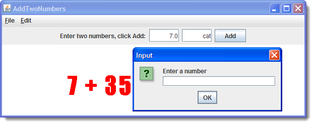
In general, I think I prefer checking the code, since I'm not too fond of the ACM error handling.Other Helpful Methods
After the answer is displayed (at the end of your
actionPerformed() method), you might want to erase the
previous answers and then set the text cursor (known as the
caret) back in the first text field.
Here's some optional code that selects the text in the first
field and then sends the cursor there:
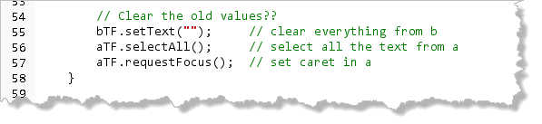
You'll learn later how to add more sophisticated focus behavior, including validation, to your programs.Introducing Layout
If you find yourself unimpressed with the example program I've
shown you here, I don't blame you. Adding a JTextField to
to the border of your program looks, well, a little bit
amateurish; the results leave just a bit
to be desired.
Fortunately, it's easy to make programs using JFC widgets look good
by making use of a layout manager. The java.awt
contains the "built-in" layout managers for Swing, but ACM programs
using buttons and text fields can make use of an easier-to-user
layout manager named TableLayout.
To use the TableLayout class, you must:
importtheacm.guipackage.- normally, extend the
Programclass (notGraphicsProgram) - call the
setLayout()method on the first line of your program'sinit()method, passing a newTableLayoutobject.
The TableLayout constructor takes two int
parameters: the number of rows and the number of columns
to use in the layout.
An Example with TableLayout
Here's a modified version of my previous example,
AddTwoNumbersAgain, which you can find in this chapter's
code folder. This is a rough translation, using a layout manager,
which I think looks a lot more professional:
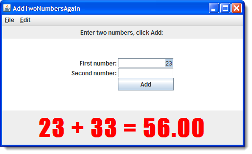
Here are the basic changes that I made to the program:- Instead of importing the
acm.graphicspackage, I've importedacm.guiinstead. And, instead of extending theGraphicsProgramclass, I've extended theProgramclass.
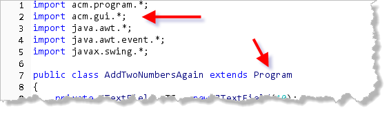
- The first line in the
init()method "installs" aTableLayoutlayout manager with three rows and two columns, while the next line sets the background of the main window to white:
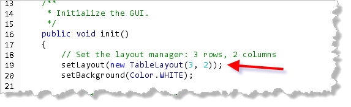
- For each row, I first add a descriptive label to
identify the item and then the
JTextFieldobject itself. On the last row, I add a "dummy" label to fill in the slot in the first column before adding theJButtonin the last position:
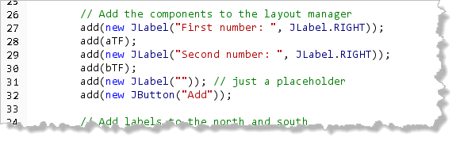
When the program runs, the layout manager places each component
in position and then sizes them. Since the text fields were both
20 columns wide, the JButton is set to the same width.
All components in a column will be the same width, while
all components in a row will be the same height.
When you use a layout manager, it only affects the center of the
program area; you can still add widgets to the borders like you
did with GraphicsProgram. That's what I've done here
with the JLabel used to display the prompt at the
top and the answer on the bottom.
Text Areas
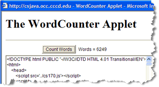
The Swing JTextField
class allows your users to enter a single line of text, so
you can write GUI programs that process text input, just like
the console programs you met earlier.
Swing also has a multi-line text component, the
JTextArea and its associated JScrollPane
class.
The JTextArea class is useful when
you need to create a more extensive "dialog" with the user
than a single line of text allows. You can also use a
text area to display instructions, and to keep
the user informed concerning the progress of your application.
JTextArea Constructors
To create a JTextArea object, you can use any
of the following four constructors:
JTextArea()
JTextArea(int rows, int columns)
JTextArea(String text)
JTextArea(String text, int rows, int columns)
As you can see, each additional constructor allows you to
supply more information, which the JTextArea
constructor uses to customize its appearance and behavior.
There are actually two additional JTextArea
constructors that make use of Document parameters.
These constructors are used with very sophisticated applications
like DrJava, but are beyond what we'll cover in this class.
Here's an example, the ACM program
JTextAreaWorld.java (which you can find in this
chapter's code folder), that creates an object using each of
the four constructors and places two in the NORTH
and two in the SOUTH borders of an
ACM GraphicsProgram:
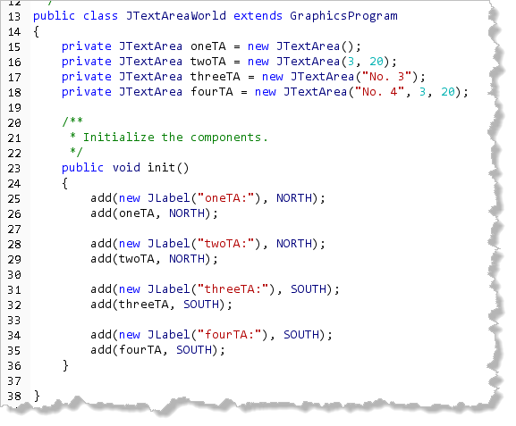
Analysis
- The first constructor,
oneTA, creates a "default" text area with zero columns and zero rows. When it is added, you can't see it at all. If you use this constructor you'll need to size the constructor later. - The second constructor creates an empty text area that is 3 rows high and 20 columns wide. As you type in more characters, the size of the text area expands to enclose the text.
- The third example shows a "default" size with an initial text value. The rows and columns are expanded to fit the size of the text.
- The fourth is a combination of example 2 and 3; an explicit size along with an initial value.
Here's what the program looks like when it runs on my XP
machine, after I've typed in a little text:
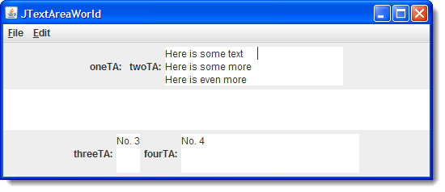
You'll want to compile and run it on your own machine to get a better feel for how the program works.Scrolling and Wrapping Operation
The default behavior of a JTextArea widget actually
doesn't act like you'd expect, because the text doesn't
scroll or wrap. To add the scrolling behavior that
you expect, you'll almost always place your text areas
inside a separate JScrollPane object.
For instance, if you modify JTextAreaWorld like this,
so that each text area is "wrapped up" inside a scroll pane:
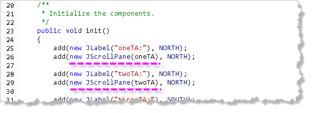
Then the size of eachJTextArea will no longer
expand when you type in more data than it can hold. Instead,
scrollbars will appear when you exceed the column position or
the row position as you can see here: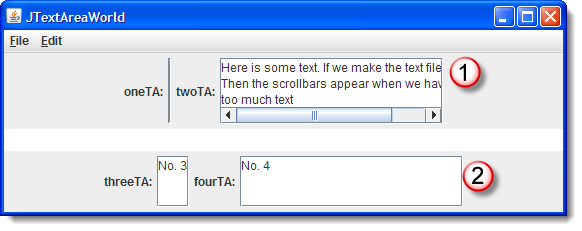
Notice that the second area has added horizontal scrollbars, since the text I've entered exceeds the column, (but not the row) specified for the text area. Not also that wrapping the text area in aJScrollPane also has the effect of adding
a boundary to the JTextArea that wasn't apparent
in the original.
Adding Wrapping
If you would rather have the text area wrap instead of
scroll, then you can do that too. The JTextArea
has two methods that control text wrapping:
ta.setLineWrap(true);
ta.setWrapStyleWord(true);
The first method turns line wrapping one and off, while the second method tells the wrapping algorithm to break on word boundaries instead of character boundaries.
With automatic wrapping, horizontal scrollbars never appear, but vertical scrollbars will show up if you exceed the defined number of rows in the text area.
Other Text Area Operations
Once you've created a JTextArea object, you
can tell it to do several things. You can replace all of
the text it contains by using the method
setText(), just like with JTextField.
If you want to clear the JTextArea of all text,
you write:
ta.setText( "" );
This assumes your JTextArea object is named
ta. The argument to setText()
is the empty string. (Two adjacent double-quotes, with
no intervening spaces.)
To add text to the end of a JTextArea,
use the append() method like this:
ta.append("Some text\n");
Inserting Text
When you want to add text to a JTextArea, but
you want to add it in the middle, rather than at the end
of the existing text, you can use the insert()
method.
This method takes two arguments:
- the new text to insert
- the position, in the
JTextArea, at which to insert the text
The position argument should be an integer, and
it represents the number of the character that you wish to
insert your new text before. The JTextArea characters
are numbered starting with zero (not one), like most numbering
done in the Computer Science arena.
Here's an example that inserts the a message at the beginning
of the JTextArea, pushing any existing text down:
ta.insert("Here's a new message\n", 0);
Replacing Text
Finally, you may want to replace some existing text
with some new text. To do this, you use the JTextArea
method replaceRange() which takes three arguments:
- the new text to be inserted
- the starting position of the text to be replaced
- the ending position, plus one, of the text to be replaced
As with insert(), this method counts starting at zero.
Dealing With Lines
As you've just seen, both insert() and
replaceRange() need to know the character position
inside the JTextArea before you can call the methods.
Most of the time, though, I find it easier to deal with
line position instead.
Here are the methods you can use to "translate" between the two measurement systems:
int numLines = ta.getLineCount(); // number of lines
int start = ta.getLineStartOffset(2); // start of third line
int end = ta.getLineEndOffset(2); // end of third line
int lineNo = ta.getLineOfOffset(275); // line at pos 275
The only "downside" of using these methods is that they
throw exceptions when given invalid arguments, and so
you have to put them in a try-catch block. You'll
learn how to do that later in the course.
BorderLayout and GridLayout
The TableLayout manager is great for text fields
and buttons. It's not that good for JTextArea.
That's because with text areas, you want the widget to
"swell up" to fill all of the needed space as the window
expands.
Two of the "regular" Java layout managers fill
this bill: BorderLayout and GridLayout.
To add either of these layout managers, first import the
java.awt package, and then just pass one of
the appropriate objects to the setLayout method
as you did before.
Here is an init() method that adds a single text
area to the center of an example program you can find in this
chapter's code folder, JTextAreaBorderLayout.java:
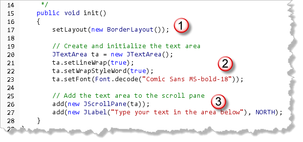
Notice that:- The layout of the center section is set to
BorderLayout. (Of course, to get this to work, I imported thejava.awtpackage.) - The
JTextAreais created and initialized. Normally if I needed to access this widget from elsewhere in the method, I'd make the widget an instance variable instead of a local variable. - I add the text area to a scroll pane and also
add a
JLabelto one of the borders.
Here is what the program looks like when it runs:
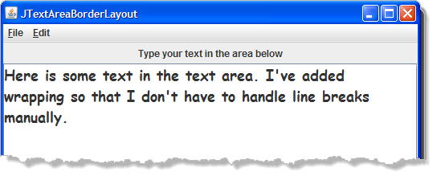
And here is another sample program, JTextAreaGridLayout.java,
that adds two JTextArea objects, one on top of
another:
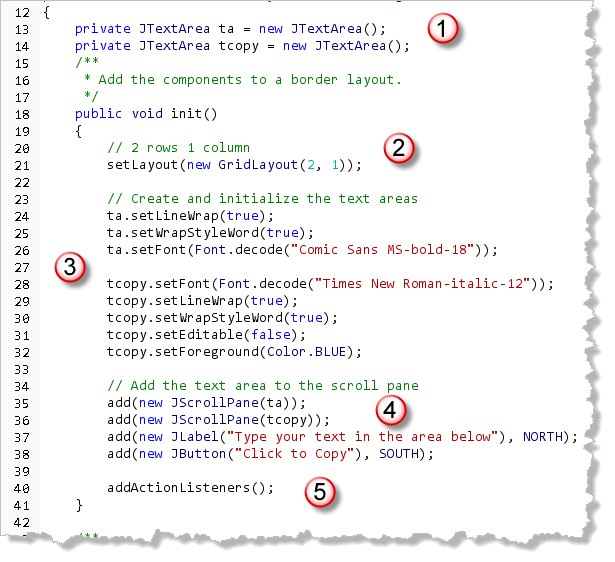
Notice that:- The two text areas are created as instance variables so that they can be accessed in the event handler.
- A
GridLayoutis installed with two rows and 1 column. UnlikeTableLayout, the components inGridLayoutwill "swell up" to take all of the available space. That's what we want. - Since we have two text areas, I initialize each of them separately. Notice that they have different fonts and the bottom one is made "read only".
- The two text areas are added, one after another, so that the first is on top and the other appears below it.
- In addition to the
JLabelin the north, I've added aJButtonto the south and activated theActionListeners. In theactionPerformed()method (not shown here), I just copy the text from one text area to the other.
Here is what the program looks like when it runs:
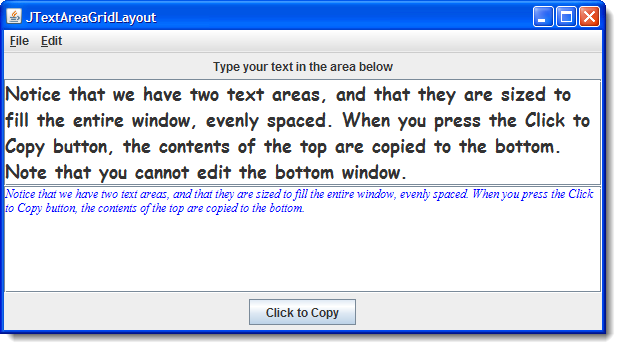

Text Components and Layout Summary
- Swing's single-line text-input widget is named
JTextField. Construct a text field by specifying the number of columns or an optional starting contents along with the number of columns. The widget is sized to hold average-width characters. - Once constructed you can customize the text field by changing the font, background color, foreground color and text alignment using the appropriate methods.
- You retrieve the contents of a
JTextFieldby using it'sgetText()method. You set the contents usingsetText(). To clear a text field, pass the empty string tosetText(). - All text field input/output is text. To retrieve numeric
input, you have to call
getText()and then parse the result. You should try to make sure the text field contains valid numeric data before parsing the input. - You can select all of the text inside your text field
by calling the
selectAll()method. You can place the text cursor (caret) inside a particular field by calling itsrequestFocus()method. - To add text fields and buttons to the central region of your
ACM programs you should:
- import the
acm.guipackage - extend the
Programclass - call
setLayout()to install a layout manager in yourinit()method.
- import the
- The ACM
TableLayoutmanager allows you to specify the number of rows and columns that should be used for your components. The width of each column and the height of each row will be based on the natural width and height of the largest component in that column or row. Cells will not swell up withTableLayout. - The Swing multi-line text component is named the
JTextArea. The text area is almost always placed inside aJScrollPanewhich supplies scrollbars when necessary. - When constructing a
JTextAreayou can specify the number of lines and the number of columns, and then place the component inside aTableLayout. - If you want the text area to expand and contract as the window
is resized, you should use the
BorderLayoutorGridLayoutlayout managers from thejava.awtpackage instead ofTableLayout. Using these layout managers, the component will swell to fill the space available as the frame is resized. - Text areas normally do not wrap the text that the user
enters. If you want to enable wrapping behavior, then call the
setLineWrap()method. If you want word wrapping (instead of just character wrapping), then callsetWrapStyleWord()as well. - In addition to
setText()andgetText(), the text area also supports anappend()method for adding text to the end of the existing text, aninsert()method for adding new text at an arbitrary location, and areplaceRange()method for replacing an existing fragment with another.